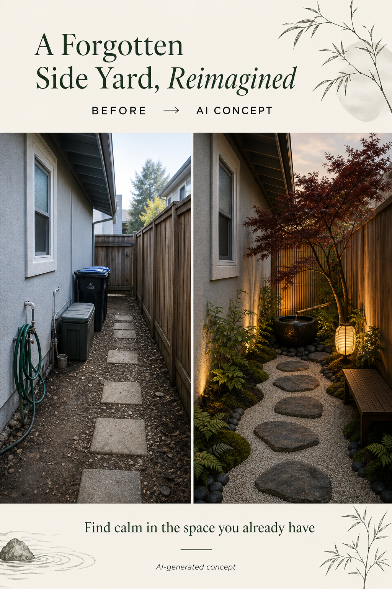

Create a slow walking rhythm
Irregular stepping stones can encourage a slower route. Keep surfaces stable and consider accessibility before copying any layout.
A narrow passage is often treated as leftover space. With a clear walking rhythm, texture underfoot, and a few intentional focal points, it can become a pause between indoors and outdoors.
Editorially reviewed July 16, 2026.
The image below is an AI-generated concept inspired by Zen garden principles. It is not a historical or site-specific design.

Irregular stepping stones can encourage a slower route. Keep surfaces stable and consider accessibility before copying any layout.
Stone, gravel, mossy tones, timber, and shade-loving plants can add depth without needing a large planting bed.
A water bowl, small tree, bench, or lantern can be enough. The point is not to fill every corner; it is to give the space a reason to be noticed.
Zen-inspired does not mean copying a single cultural style without context. Use the mood—calm, texture, restraint, and thoughtful movement—as a starting point, then choose materials and plants that work where you live.
Keep gates, meters, drains, bins, utilities, and emergency routes usable after stones, plants, or screens are added.
Check slip resistance, level changes, step spacing, drainage, lighting, and accessibility before selecting a path treatment.
Narrow passages can be shaded, damp, windy, or dry. Choose plants and materials for the actual conditions, not only the reference image.
A single tree, basin, bench, or lantern often creates more calm than several competing ornaments in a confined space.
It can. The exact plants, drainage, and materials should respond to the amount of light and moisture your passage receives. Ask a local nursery or professional for plant advice.
Yes. Keep required access to gates, utilities, bins, and maintenance areas clear. A concept should help you spot conflicts before you commit to a layout.
No. Calm can come from restraint, proportion, a clear route, natural texture, and one focal pause. Choose surfaces that are safe, legal, maintainable, and suitable for your climate and access needs.
Upload a photo to explore directions before the next decision.
AI-generated visualizations are concepts. Check local conditions and consult a qualified professional before construction or planting.